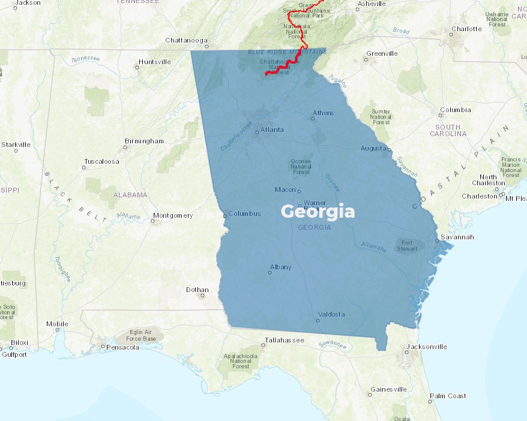
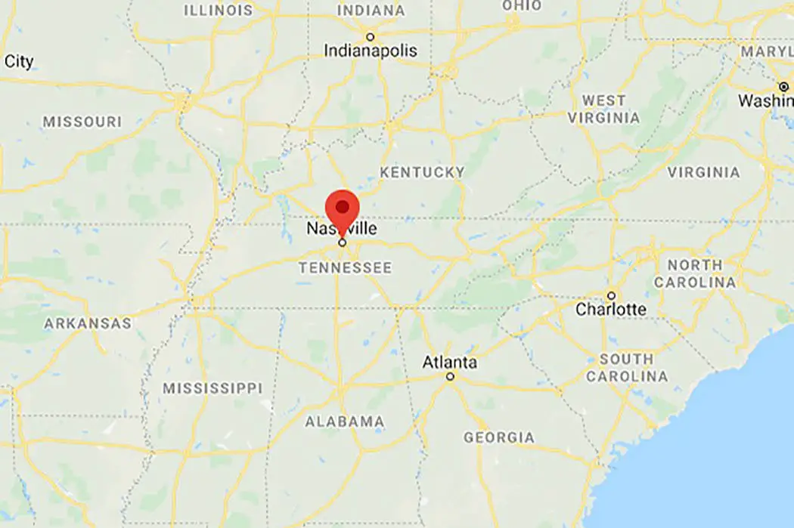

ATLANTA

SPRINGER MOUNTAIN, GEORGIA
Hop on the appalachian trail and finish your trip near your home of upstate New York.
Atlanta was a dead end, no hope and no answers. It was a game of cat and mouse with the several dangers
that were looming.
It is clear that something has occurred to the world and human contact or finding any information
is a dead end.
Simply starting and hoping your family is still home provides the best opportunites.

NASHVILLE, TENNESSE
Feeling hopeless on finding any answers is draining you.
Nashville provides a mental escape from everything that is not going on.
Being alone has really gotten to you and attempting another rather large city can provide some hope
on finding the answer.